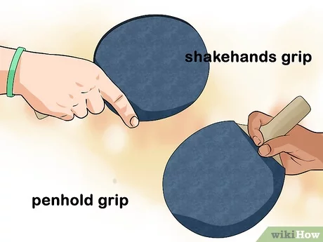
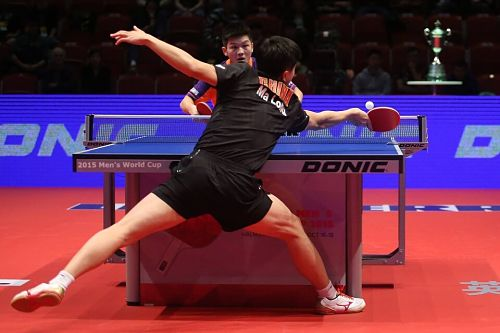

a
Ping Pong
El tenis de mesa (también conocido como ping-pong o pimpón) es un deporte de raqueta que se disputa entre dos jugadores o dos parejas (dobles). Es un deporte olímpico desde Seúl 1988, y el deporte con mayor número de practicantes, con 40 millones de jugadores compitiendo en todo el mundo. Según un estudio realizado por la NASA, es el deporte más complicado que un ser humano puede practicar a nivel profesional. Diversos estudios han demostrado que la práctica de este deporte mejora, entre otras, la capacidad y el tiempo de reacción, la coordinación ojo-mano, la concentración y la memoria.
La regulación a nivel mundial de este deporte corre a cargo de la Federación Internacional de Tenis de Mesa (ITTF, por sus siglas en inglés), que agrupa a más de 200 organizaciones nacionales y 33 millones de federados a todos los niveles de competición, desde torneos de clubs hasta los campeonatos del mundo, que se celebran anualmente desde 1926 y bianualmente desde 1957, o el World Tour, un conjunto de torneos organizados por la ITTF que se celebran en todos los continentes y que reúne a los profesionales del más alto nivel.

a
Historia
Aunque a menudo se asocia el tenis de mesa con los países asiáticos, está ampliamente aceptado que este deporte nació en el último cuarto del siglo xix en Inglaterra como una derivación del tenis.Es posible que jugadores de tenis ante la adversa climatología inventaran una especie de tenis en miniatura utilizando una mesa de billar o de comedor, en un club de tenis, y dividiéndola en dos campos con libros o simultáneamente con una cuerda. Como pelotas servirían algunos de los muchos modelos existentes para juegos infantiles, o incluso tapones de corcho convenientemente adaptados. Las raquetas serían tapas de cajas de puros o bates infantiles. Indudablemente se mezcla la leyenda con la realidad. Por esta versión se inclinan Gerald Gurney y Ron Crayden, dos profundos estudiosos en la historia del tenis de mesa. Los estudiantes universitarios adoptaron rápidamente el entonces juego de salón en toda Inglaterra. En 1884 la firma F. H. Ayres Ltd. (Frederick Henry Ayres) ya comercializaba un juego de tenis de salón en miniatura. El británico James Devonshire patenta, el 9 de octubre de 1885, su «Table Tennis», la primera vez de la que se tiene conocimiento en utilizar el término «tenis de mesa». En julio de 1890, el industrial de Yorkshire David Forster, patentó un juego de mesa para sala, el cual consistía únicamente en una mesa rodeada con una especie de valla para mantener la pelota dentro de unos límites. No existen evidencias de su comercialización.
Juego de Ping-Pong de principios del siglo xx comercializado por la empresa Parker Brothers.
En 1922 ya se conocía el nuevo deporte en gran parte de Europa y la India, estando regulado en varios países y jugándose campeonatos asiduamente. En el año 1926 se funda la Asociación Inglesa de Tenis de Mesa con nuevas reglas y estatutos, eligiéndose como presidente a Ivor Montagu y como secretario a Bill Pope. Cuando se fundó esta asociación, tanto Montagu como Pope emprendieron la tarea de organizar el I Campeonato del mundo en Londres, que tuvo un gran éxito y se resolvió económicamente en este año 1926 con 300 libras de pérdidas. La idea del campeonato mencionado surgió con motivo de un torneo internacional organizado en Berlín por el doctor Lehmann, participando alemanes, austríacos, húngaros e ingleses. En este torneo se habló de la necesidad de constituir una Federación Internacional de Tenis de Mesa de forma provisional y la organización del I Campeonato del Mundo y de un Congreso, ambos en Londres. Celebrado el Congreso se constituye oficialmente la Federación Internacional de Tenis de Mesa (ITTF), nombrándose presidente a Ivor Montagu y secretario a Bill Pope, el cual lo sería hasta su muerte prematura en 1950
Partido del Campeonato del mundo 1965.
En sus inicios, el tenis de mesa está dominado por los países del Bloque del Este europeo, especialmente por Hungría y Checoslovaquia. Con jugadores como el gran Viktor Barna, Hungría consigue la medalla de oro en los campeonatos del mundo por equipos entre 1926 y 1931, entre 1933 y 1935 y en 1938, 1949 y 1952 (entre 1940 y 1946 no se disputaron).
El primer país asiático en frenar el dominio europeo fue Japón, que dominó los mundiales entre 1952 y 1957. Este dominio fue el reflejo de una incorporación técnica aportada por este país: la espuma. Al colocar una fina espuma entre la madera de la raqueta y la goma, se hicieron posibles efectos inéditos con las raquetas clásicas. Con la irrupción de los japoneses en este deporte y la incorporación de nuevas técnicas y materiales, empezó una nueva época de la historia del tenis de mesa
Ma Long durante los Campeonatos del mundo 2013.
En pleno dominio chino de este deporte, pocos países pudieron competir con el gigante asiático, a excepción de la llamada «escuela sueca» que, mediante innovadores métodos de entrenamiento consiguió hacerse con el campeonato del mundo por equipos en 1989, 1991, 1993 y 2000, con jugadores como Jörgen Persson o Peter Karlsson, pero sobre todo con Jan-Ove Waldner. En 1982, con menos de 17 años, Waldner fue subcampeón de Europa absoluto, y en 1983 subcampeón del mundo por equipos, en 1989 conquistó su primer campeonato del mundo individual y por equipos y en 1992 fue campeón olímpico individual en Barcelona. En 1997, ya superados los 30 años, consiguió su segundo campeonato del mundo individual, en el 2000 su cuarto campeonato del mundo por equipos y la medalla de plata individual en los Juegos Olímpicos de Sídney 2000, y en los de Atenas 2004, ya con 39 años, consiguió ser semifinalista en individuales.
Con un juego ofensivo muy vistoso, Waldner aumentó la popularidad de este deporte a lo largo de una carrera anormalmente extensa en el tenis de mesa al más alto nivel. En 2003 fue incluido en el Salón de la Fama del Tenis de Mesa.

Jan-Ove Waldner.
La adquisición del estatus olímpico es fundamental para el desarrollo y expansión de un deporte. Las propuestas para la inclusión del tenis de mesa como deporte olímpico se inician en 1931, pero no fue hasta 1977 cuando el director técnico del Comité Olímpico Internacional, Harry Banks, comunicó que el COI, en su 79.ª sesión celebrada en Praga, había acordado reconocer al tenis de mesa como deporte olímpico. En la 84.ª sesión del COI, en septiembre de 1981, se acordó la inclusión de este deporte en los Juegos, no obstante, el programa de la Olimpiada de 1984 en Los Ángeles no se pudo alterar, con lo que solo pudo ser deporte de exhibición y hubo que esperar hasta los Juegos de Seúl de 1988 para que al fin figurara en el programa oficial de los juegos.
Juegos Olimpicos de Rio de Janeiro 2016.
a
Reglas
La ITTF establece la reglamentación oficial del tenis de mesa a nivel mundial. De acuerdo con esta reglamentación se indican, de manera resumida, algunas de estas normas:
LA MESA
De acuerdo con las normas establecidas por la ITTF, la superficie superior de la mesa, conocida como superficie de juego, será rectangular, con una longitud de 2,74 m y una anchura de 1,525 m, y estará situada en un plano horizontal a 76 cm del suelo.
La superficie de juego puede ser de cualquier material y proporcionará un bote uniforme de unos 23 cm al dejar caer sobre ella una pelota reglamentaria desde una altura de 30 cm. El color debe ser oscuro, uniforme y mate, con una línea lateral blanca de 2 cm de anchura a lo largo de cada borde de 2,74 m, y una línea de fondo blanca de 2 cm de anchura a lo largo de cada borde de 1,525 m. Estará dividida en dos campos iguales por una red vertical paralela a las líneas de fondo y será continua en toda el área de cada campo.
Para dobles, cada campo estará dividido en dos medios campos iguales por una línea central blanca de 3 mm de anchura y paralela a las líneas laterales.
LA PELOTA
La pelota es esférica, tiene un diámetro de 40.5 mm y un peso de 2,7 g. Será de celuloide o de un material plástico similar. La ITTF autoriza únicamente pelotas de color naranja o blanco y de tono mate. Los estampados de las marcas pueden variar ampliamente, dependiendo del fabricante. Para el año 2015, la ITTF aprobó 74 modelos de pelotas para su utilización en competiciones
El reglamento inicial de la ITTF de diciembre de 1926 establecía que la pelota debería tener una circunferencia de entre 4,5 y 4,75 pulgadas (aproximadamente entre 36 y 38 mm de diámetro). Tras los Juegos Olímpicos de Sídney 2000, a partir de octubre de ese mismo año y con el fin de disminuir la velocidad de juego y hacerlo más atractivo para los espectadores y las transmisiones por televisión, la ITTF incrementó el diámetro de la pelota de 38 a 40 mm.
LA RAQUETA
Para golpear la pelota se emplea una raqueta, que puede ser de cualquier tamaño, forma o peso, aunque la hoja deberá ser plana y rígida y, como mínimo, el 85 % de su grosor será de madera natural. La hoja puede estar reforzada en su interior con una capa adhesiva de un material fibroso como fibra de carbono, fibra de vidrio o papel prensado, pero sin sobrepasar el 7,5 % del grosor total o 0,35 mm, siempre la dimensión inferior.
El lado de la hoja usado para golpear la pelota estará cubierto, bien con goma de picos normal con los picos hacia fuera y un grosor total no superior a 2 mm, o bien con goma sándwich con los picos hacia dentro o hacia fuera y un grosor total no superior a 4 mm. La superficie del recubrimiento de los lados de la hoja, o la de un lado si este queda sin cubrir, será mate, negro por un lado y por el otro de un color luminoso, claramente diferenciable del negro y del color de la pelota.
EL PARTIDO
Los partidos pueden ser individuales o dobles. Después de cada 2 tantos anotados, el receptor o pareja receptora pasará a ser el servidor o pareja servidora, y así hasta el final del juego, a menos que ambos jugadores o parejas hayan anotado 10 tantos o esté en vigor la regla de aceleración. En estos últimos casos, el orden del servicio y de la recepción será el mismo, pero cada jugador servirá tan solo un tanto alternativamente.
En cada juego de un partido de dobles, la pareja que tiene el derecho a servir en primer lugar elegirá cuál de los dos jugadores lo hará primero, y en el primer juego de un partido la pareja receptora decidirá cuál de los dos jugadores recibirá primero; en los siguientes juegos del partido, una vez elegido el primer servidor, el primer receptor será el jugador que le servía en el juego anterior; en cada cambio de servicio, el anterior receptor pasará a ser servidor, y el compañero del anterior servidor pasará a ser receptor.
El jugador o pareja que sirva primero en un juego recibirá en primer lugar en el siguiente juego del partido. En el último juego posible de un partido de dobles, la pareja receptora cambiará su orden de recepción cuando la primera de las parejas anote 5 tantos. El jugador o pareja que comienza un juego en un lado de la mesa comenzará el siguiente juego del partido en el otro lado, y en el último juego posible de un partido, los jugadores o parejas cambiarán de lado después de que el primero de los jugadores o parejas anote 5 tantos.
En los partidos de dobles los jugadores de la pareja tendrán que golpear alternativamente a la pelota (uno primero y otro después). En dobles el saque se realizará cruzado siempre desde el lado derecho del jugador que saca hacia el lado derecho del jugador del equipo contrario incluyéndose el rebote en la línea central como válido.
Ganará un juego el jugador o pareja que primero alcance 11 tantos, excepto cuando ambos jugadores o parejas consigan 10 tantos; en este caso, ganará el juego el primer jugador o pareja que posteriormente obtenga 2 tantos de diferencia (por ejemplo: 12-10). Un partido se disputará al mejor de cualquier número impar de juegos; el número de juegos por partido varía dependiendo de la competición.
a
Tecnica y Habilidades
El ping pong es un deporte que requiere una técnica adecuada para lograr un juego efectivo y maximizar las posibilidades de ganar puntos. Los jugadores deben desarrollar y perfeccionar una serie de habilidades clave que abarcan desde la postura corporal hasta los diferentes tipos de golpes.
LA POSTURA CORPORAL
La postura correcta es fundamental en el ping pong. Los jugadores deben mantenerse equilibrados y preparados para responder rápidamente a los movimientos del oponente. Una buena postura implica estar ligeramente inclinado hacia adelante, con las rodillas flexionadas y el peso distribuido de manera equitativa en ambos pies. Esta posición ayuda a mantener el equilibrio y permite una mayor agilidad en los desplazamientos.
AGARRE DE LA RAQUETA
Existen diferentes estilos de agarre en el ping pong, pero los dos más comunes son el agarre clásico y el agarre tipo "penhold". En el agarre clásico, los dedos índice, medio y anular rodean el mango de la raqueta, mientras que el pulgar descansa en el lado opuesto. En el agarre tipo "penhold", la raqueta se sujeta como si fuera un lápiz, con el pulgar y los dedos índice y medio en el lado posterior. Ambos estilos tienen sus ventajas y dependen de las preferencias individuales de cada jugador.
MOVIMIENTO DE PIES
El ping pong es un deporte rápido y dinámico que requiere movimientos rápidos y precisos. Los jugadores deben aprender a desplazarse lateralmente, hacia adelante y hacia atrás para posicionarse correctamente y alcanzar la pelota en el momento adecuado. La capacidad de moverse de manera fluida y anticipar los movimientos del oponente es esencial para tener éxito en el juego.
Estas son solo algunas de las habilidades y técnicas básicas en el ping pong. A medida que los jugadores adquieren más experiencia, pueden desarrollar variaciones y combinaciones de golpes para adaptarse a diferentes situaciones de juego. La práctica constante y la mejora de la técnica.